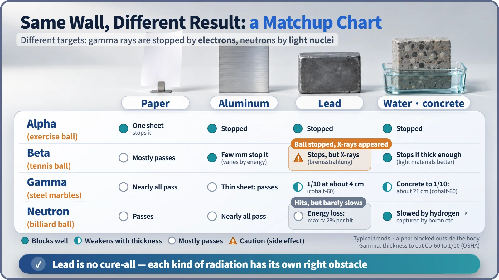
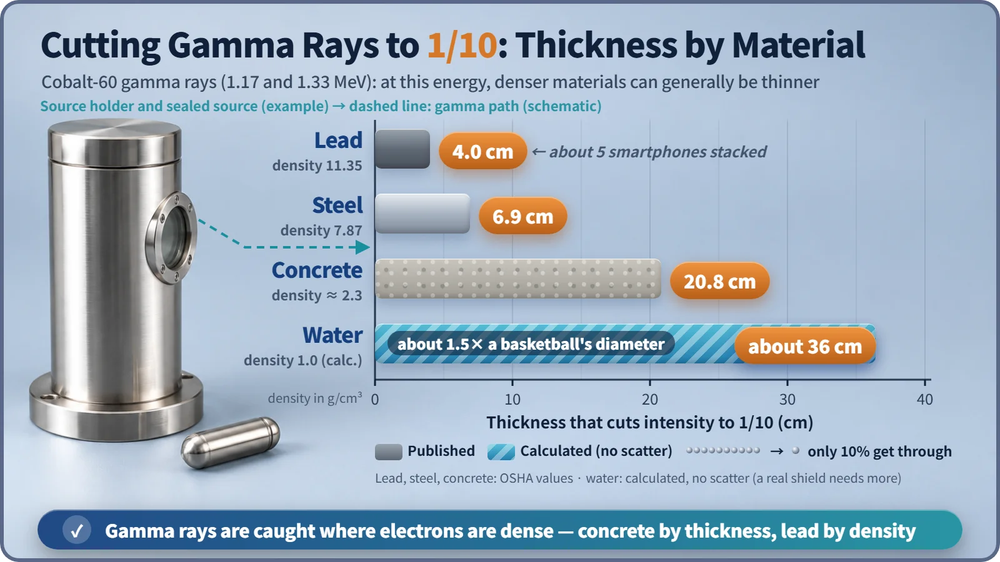

Nuclear & Radiation Basics · 023
Every Ball Trips on a Different Obstacle — Why Lead, Water and Concrete Shield Different Kinds of Radiation
Each kind of radiation loses energy to a different partner, so the best shield is the one that matches the radiation, not simply the heaviest.
No single material blocks every kind of radiation best, because each kind loses its energy to a different partner. Gamma rays are stopped by electrons, so dense lead or thick concrete works; neutrons are slowed only by light nuclei such as hydrogen, so water, polyethylene and concrete do the job; alpha and beta need only thin, light layers. [1]
If lead is the best, why isn't everything lead?
"You block radiation with lead." Yet at a nuclear power plant, used fuel sits underwater in something like a deep swimming pool, and the reactor is surrounded by enormously thick concrete. The short answer: each kind of radiation trips over a different partner.
Roll four balls through an obstacle course
Picture a paper curtain, a badminton net, a forest of steel posts and a mat packed with billiard balls. Roll four very different balls through:
- A big exercise ball (alpha) stops right at the paper curtain.
- A tennis ball (beta) gets through the curtain but is caught by the net.
- A handful of steel marbles (gamma) slip through the net, and a few fewer make it out each time they pass the dense forest of posts.
- A billiard ball (neutron) bounces off the steel posts without losing speed, but quickly runs out of steam in the mat of identical billiard balls.

Alpha and beta: a thin layer will do
An alpha particle is a helium nucleus, two protons and two neutrons bound together. Strongly charged, it disturbs atoms all along its path and stops within a few centimeters of air; a sheet of paper or the dead outer layer of skin is enough. (Breathing alpha emitters in is a different matter; this is about blocking from outside.) [2]
Beta radiation is fast electrons. A few millimeters of aluminum or about a centimeter of plastic stops it. Here lead actually makes things worse: when a fast electron swerves sharply next to a heavy nucleus it emits X-rays, called bremsstrahlung ("braking radiation"). So beta radiation is blocked first with light materials.
Gamma rays: the denser the electrons, the better they're caught
Gamma rays mostly collide with the electrons in a material. The more electrons packed into a given thickness, the higher the density, the better the blocking, and high-atomic-number atoms also absorb low-energy gamma rays strongly. That is why lead (density 11.35) became the byword for gamma shielding, and why the apron for a dental X-ray contains lead or a similarly heavy metal.
What matters most is how many electrons sit in the thickness, not which material it is. Compared at equal weight, lead and concrete differ less than you'd think; lead wins overwhelmingly only at equal thickness. Gamma rays never simply end, so shields are compared by the half-value layer (thickness to halve the intensity) and the tenth-value layer (thickness to cut it to one-tenth).
| Cobalt-60 gamma rays | Half-value layer | Tenth-value layer |
|---|---|---|
| Lead | about 1.2 cm | 4.0 cm |
| Steel | about 2.1 cm | 6.9 cm |
| Concrete | about 6.6 cm | 20.8 cm |
| Water | — | about 36 cm (calculated) |

Concrete has to be about five times thicker than lead, but it is cheap and doubles as the building's walls, which is decisive when huge spaces must be enclosed. [3] [4]
Neutrons: heavy walls are wasted effort
Neutrons carry no charge and hardly deal with electrons, so all the electrons in lead are useless against them. A neutron slows only by hitting nuclei, and the nucleus's weight matters. A ping-pong ball just bounces off a bowling ball, but a billiard ball hitting an identical one head-on hands over all its speed. The hydrogen nucleus, almost exactly as heavy as a neutron, is that identical ball: a neutron can lose up to 100% of its energy in one collision with hydrogen, but only about 2% with lead.
So neutron shielding works in two steps: hydrogen-rich water, polyethylene and concrete slow the neutrons, then absorbers such as boron capture them. Concrete qualifies because it holds water locked inside as it hardens. [1]
That's why nuclear plants are built in layers
A spent fuel pool is typically more than 12 m deep, with at least 6 m of water over the fuel. The water removes heat while cutting both gamma rays and neutrons, so workers can work at the pool edge. The thick concrete biological shield around the reactor handles gamma rays with its thickness and neutrons with the water it holds. Lead steps in when only gamma rays must be blocked in a tight space. [5]
Key takeaways
Shielding is not about piling material on thick but choosing the obstacle that matches the opponent: light layers for alpha and beta, dense or thick material for gamma rays, and hydrogen plus an absorber for neutrons.